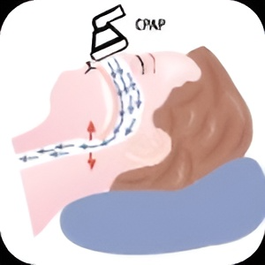

СІПАП терапія
В даний час СІПАП-терапія є загальновизнаним та основним методом лікування зупинок дихання уві сні середнього та тяжкого ступеня. Ефективність та безпека СІПАП-терапії підтверджені численними дослідженнями, а також майже 40-річним досвідом клінічного застосування даного методу у понад 50 мільйонів пацієнтів по всьому світу.
Механізм дії СІПАП-терапії:
01.
Дихання в нормі.
Дихальні шляхи відкриті
02.
Спад дихальних шляхів при обструктивному апное
03.
Позитивний тиск перешкоджає спаду дихальних шляхів
Показання до СІПАП-терапії:
-
Тяжкий ступінь сонного апное
незалежно від наявності або відсутності клінічних симптомів захворювання;
-
Середній ступінь сонного апное
при наявності виражених скарг, характерних для сонного апное
-
Легкий ступінь сонного апное
за наявності виражених скарг, характерних для сонного апное + бажання самого пацієнта застосовувати саме СІПАП-терапію, а не інші методи лікування
Переваги СІПАП-терапії
-
Повне (більш ніж у 95% випадків) усунення епізодів зупинок дихання у перші (1-3) ночі лікування
-
У хворого зникають хропіння, апное, нормалізується насичення крові киснем та структура сну.
-
Часто вже після першої ночі лікування пацієнти відзначають виражений клінічний ефект щодо більшості симптомів, що його турбують.
-
Вартість лікувального обладнання
Апарати СІПАП
В наш час на ринку представлено багато моделей апаратів СІПАП (також BPAP, Auto-CPAP та інші модифікації) великої кількості компаній-виробників. Розглянемо на прикладі G2S CPAP System як вони працюють та які в них особливості:
01.
Режими роботи:
- Режим AUTO (тиск регулюється автоматично).
- Режим титрування (тиск регулюється автоматично).
- Режим CPAP (фіксований тиск).
02.
Зволожувач
Існує п'ять рівнів вологості. Зі збільшенням нумерації відповідно підвищується і вологість. Зволожувач повітря може зменшити сухість і подразнення в носі, додавши вологи (і тепла, якщо можливо) до потоку повітря.
03.
Автоматичне ввімкнення / викнення
Коли цю функцію ввімкнено, пристрій автоматично починає терапію, коли ви дихаєте в маску та автоматично припиняє терапію щоразу, коли знімається маска
04.
Звукове сповіщення
розвучить, якщо пристрій випадково відключено від живлення під час доставки повітря. Сигналізація видалення маски.
05.
Функція Пандус
Функція, яка може підвищити комфорт пацієнта на початку терапії. Він може знизити тиск, а потім поступово підвищити тиск до встановленого значення, щоб пацієнт міг більш комфортно заснути.
06.
Кольоровий РК-екран
буде зручний для вас, щоб побачити дані в процесі лікування включаючи данні сну минулої ночі. Відображення меню для операцій, повідомлень, даних моніторингу тощо.
Догляд, та очистка СІПАП апарату
- Назальна маска та система видиху підлягають щоденному очищенню післявикористання
- Маску та систему видиху необхідно міняти кожні 12 місяців.
- Щотижня очищати фільтр грубої очистки і змінювати його не рідше ніж один раз через 6 місяців
- Регулярно протирати корпус SOMNOcomfort 2e та блок живлення.
- Дихальний контур підлягає очищенню відповідно до рівня забруднення, але нерідше одного разу на місяць.
- Щодня очищати зволожувач
- Трубка вимірювання тиску підлягає заміні кожні 12 місяців
- Проводити функціональну перевірку у центрі обслуговування один раз в 6 місяців.